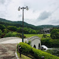

금강자연휴양림

- 
1997년 10월 31일에 개장하였으며 구역면적은 237만㎡, 1일 최대 수용인원은 2천 명이다.
금강이 계룡산을 휘도는 지점에 있으며, 진입로 강가에 창벽(蒼壁)이라는 바위벼랑이 길게 뻗어 있다. 강가 팔각정에서 금강과 창벽의 절경이 한눈에 들어온다.
정문인 솟을대문 앞에는 백제 궁안지를 본떠 중도식 곡(曲)자형으로 조성한 연못이 있다. 가운데 완만한 능선을 중심으로 산림박물관, 충청남도 산림환경연구소, 열대온실, 야생화원, 유실수원 등이 있고, 언덕 너머에 조류사육장과 수류사육장, 원앙사육장 등이 있다.
1997년 10월 개원한 산림박물관은 백제의 전통양식으로 건립하였는데 자연과의 만남, 산림의 역사, 산림의 혜택과 이용, 고통받는 산림, 산림정책과 미래의 산림을 주제로 산림에 관한 모든 것을 전시한다.
한국에서 둘레가 가장 긴 나무인 금산군 남이면 석동리 은행나무(천연기념물 365)와 공주시 신풍면 선학리에 있는 당산나무, 안면도 소나무 등을 실제 모형물로 제작 전시해 놓았다.
휴양림 안에는 산책로, 등산로, 물놀이장, 체력단련시설, 어린이놀이터, 잔디광장, 산림욕장, 전망대 등의 시설이 있으며, 금강과 창벽의 절경을 조망할 수 있는 신선대에는 누각 창연대가 있다.
주변에 계룡산국립공원, 동학사, 갑사, 공주국립박물관, 무령왕릉, 대전엑스포 과학공원, 유성온천, 공주계룡저수지, 국사봉자연휴양림 등의 관광지가 있다.